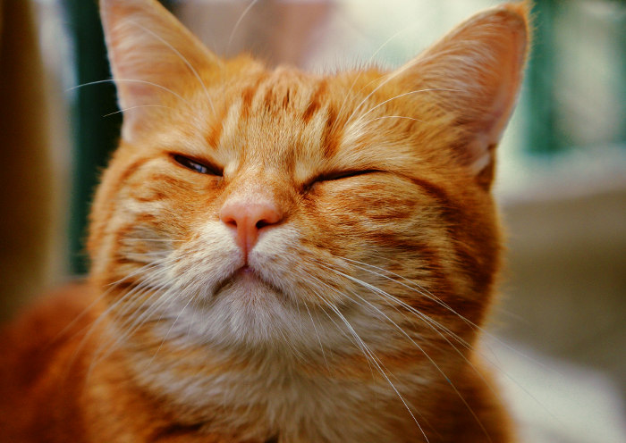

La vida de puking
Puking, un felino extraordinario de Tortuguitas, Argentina, se destacó por su singularidad desde su nacimiento. Su amor incondicional por la comida balanceada, su espíritu aventurero y sus peleas amigables en los techos lo hicieron icónico en su vecindario. Marcaba su territorio con pequeñas gotas de pipí y tenía horarios peculiares: maestro de la siesta durante el día y alborotador nocturno. A pesar de su independencia, disfrutaba jugando con otros gatos y dejó una huella imborrable en la comunidad, convirtiéndose en una leyenda local.

Puking se convirtió en una figura querida en Tortuguitas, donde su amor por la comida, su espíritu aventurero y su personalidad única lo hicieron inolvidable para todos los que lo conocieron. Su historia se convirtió en un relato recurrente en las reuniones de vecinos, perpetuando su legado en la comunidad